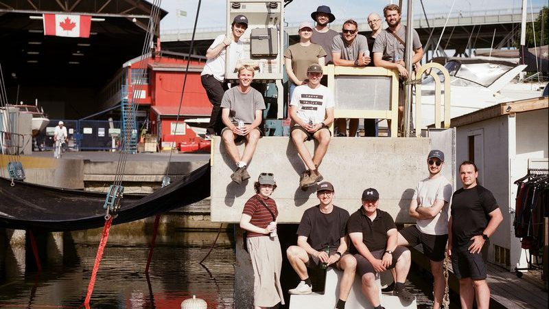

Acoustic position reconstruction for P-ONE
The detector lines move with the ocean, and P-ONE can only reconstruct neutrino directions if it knows where every module is. I'm developing methods that combine acoustic ranging between seafloor pingers and receivers in the modules to rebuild the detector's geometry continuously, working toward a reconstruction framework for the whole detector.
More detail
This builds on the prototype system described in our 2025 JINST paper: piezo-acoustic receivers inside P-ONE pressure housings and autonomous pingers on the seafloor. In a test at sea, it measured relative ranging times with about 230 to 280 µs accuracy at distances up to 1.6 km. I presented this work at the International School of Cosmic Ray Astrophysics in Erice, Italy (2026).